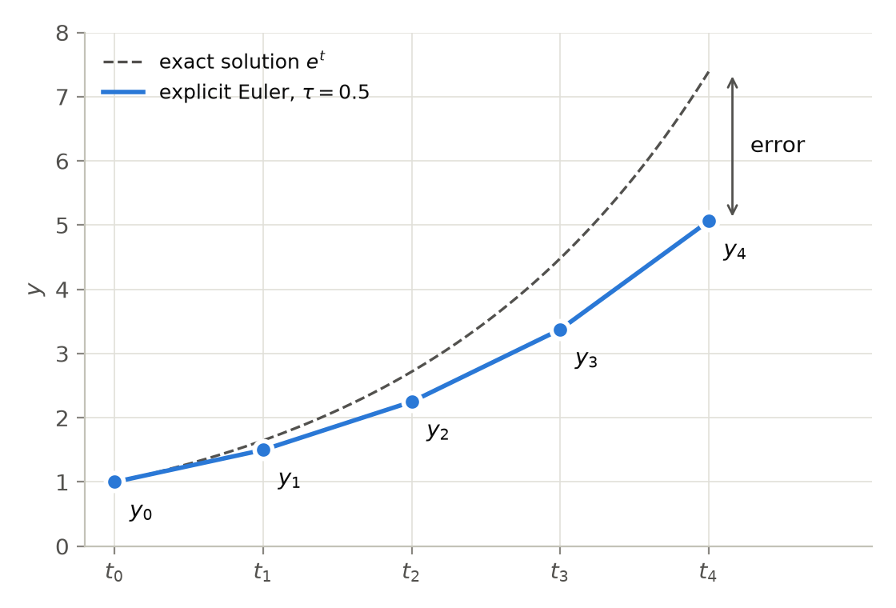
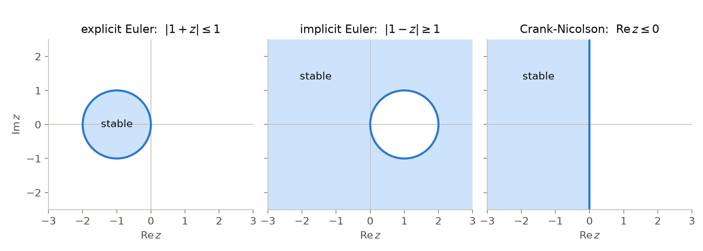

16. Some simple time-stepping methods#
The goal is to find an approximate solution to the ODE
using a numerical method.
We introduce time points
usually we choose \(N \in {\mathbb N}\), define \(\tau := \frac{T-t_0}{N}\), and \(t_n := t_0 + n \tau\).
We compute a discrete approximate solution
16.1. Explicit Euler method#
The derivative \(y^\prime\) is approximated by the forward difference quotient
Inserting this approximation into the equation we get the numerical scheme
or (with constant mesh size \(\tau = t_{n+1} - t_n\))
This method is very simple, it is a fully explicit algorithm. The next step \(y_{n+1}\) is defined by simply evaluating this formula.


Fig. 16.1 Explicit Euler for \(y^\prime = y\), \(y(0) = 1\): every step follows the slope \(f(t_n, y_n)\) at the current point. The errors of the steps add up.#
16.2. Implicit Euler method#
One can also start with the backward difference formula. The same difference quotient is now seen as an approximation to \(y^\prime(t_{n+1})\). This leads to the discrete scheme
or
Now, the new step \(y_{n+1}\) shows up also within the right-hand side. We cannot simply evaluate a formula, but have to solve a system of equations. If the right-hand side \(f(t,y)\) depends non-linear on the state \(y\), one has to solve a non-linear system. Typically, this is done using Newton’s method.
16.3. Crank-Nicolson method#
Interpreting the difference quotient as an approximation to the derivative in the mid-point \(\frac{t_{n}+t_{n+1}}{2}\), and approximating the right-hand side there by the average of its values at \(t_n\) and \(t_{n+1}\), we end up with the Crank-Nicolson method
Evaluating \(f\) at the average \(\big(\frac{t_n+t_{n+1}}{2}, \frac{y_n+y_{n+1}}{2}\big)\) instead leads to the implicit mid-point rule, a different method.
Like the implicit Euler method, Crank-Nicolson is an implicit method. We will see in section Consistency and convergence that it converges with order 2, while both Euler methods converge with order 1.
16.4. Derivation from the integral equation#
We consider the ODE
on the time interval \([t_n, t_{n+1}]\). We rewrite it as an integral equation
We insert \(t = t_{n+1}\) to obtain the next time-step, and use numerical integration to approximate the integral on the right-hand side. The left-sided rectangular rule
leads to
the right-sided rectangular rule
leads to
The more accurate trapezoidal rule
leads to the Crank-Nicolson method
We see that we have recovered the same three methods from numerical integration, as we had already motivated before from numerical differentiation. We will use more accurate integration rules to develop more accurate time-stepping methods later.
16.5. Consistency and convergence#
All methods above are one-step methods, which can be written in the form
with the increment function \(\Phi\). For the explicit Euler method we have \(\Phi(t,y,\tau) = f(t,y)\). For implicit methods, \(\Phi\) is defined implicitly by solving the equation in every time-step.
The local error is the error produced in one time-step, if we start the step with the exact value \(y(t_n)\):
A method is called consistent of order \(p\) if \(\| \eta_{n+1} \| \leq C \, \tau^{p+1}\). Taylor expansion shows order \(p = 1\) for the explicit and the implicit Euler methods. For the Crank-Nicolson method, the local error is the error of the trapezoidal rule, which is \(O(\tau^3)\), thus \(p = 2\).
In every time-step we make a local error of order \(\tau^{p+1}\). After \(N = (T-t_0)/\tau\) steps these errors add up to a global error of order \(\tau^p\), as long as errors from previous steps are not amplified too much. This is ensured by stability of the method. In short:
consistency of order \(p\) + stability \(\Rightarrow\) convergence of order \(p\): \(\| y(t_n) - y_n \| \leq C(T) \, \tau^p\).
For a Lipschitz continuous increment function \(\Phi\), the constant \(C(T)\) grows like \(e^{L (T-t_0)}\), similar as in the stability estimate with respect to initial conditions. For stiff problems with large \(L\) this bound is useless, a better understanding of stability is obtained from the test equation in the next section.
16.5.1. Measuring the order#
If the error behaves like \(e(\tau) \approx C \tau^p\), then
In a double-logarithmic plot of the error over \(\tau\), we observe a straight line with slope \(p\). This is the standard test of a time-stepping implementation: if the observed order does not match the theoretical order, there is a bug.
16.6. Stability for linear ODEs#
An ODE \(y^\prime(t) = A y(t)\) with \(A \in {\mathbb R}^{d \times d}\) diagonalizable (over \({\mathbb C}\)) is transformed by the eigenvector basis into \(d\) decoupled scalar ODEs
where \(\lambda_k \in {\mathbb C}\) are eigenvalues of \(A\). If \(\lambda_k\) has negative (non-positive) real part, the solution is decaying (non-increasing). The three methods above commute with this transformation, thus it is enough to study the scalar test equation \(y^\prime = \lambda y\).
The explicit Euler method with time-step \(\tau\) leads to
the implicit Euler method to
and the Crank-Nicolson to
The stability function \(g(\cdot)\) of a method is defined such that
These are for the explicit Euler, the implicit Euler, and the Crank-Nicolson:
The domain of stability is
For the three methods we obtain


Fig. 16.2 Domains of stability (shaded) of the three methods in the complex plane of \(z = \tau \lambda\).#
If \(\operatorname{Re}(\lambda) \leq 0\), then \(\tau \lambda\) is always in the domain of stability of the implicit Euler, and of the Crank-Nicolson. This property of a method is called \(A\)-stability. The explicit Euler leads to (quickly) increasing numerical solutions if \(\tau\) is not small enough.
If, in addition to \(A\)-stability, \(\lim_{|z| \rightarrow \infty} g(z) = 0\), quickly decaying solutions lead to quickly decaying numerical solutions. This is the case for the implicit Euler, but not for the Crank-Nicolson. This property is called \(L\)-stability. One observes (slowly decreasing) oscillations with the CN method when \(-\tau \lambda\) is large.
An undamped oscillator \(y^{\prime \prime} = -\omega^2 y\) leads to purely imaginary eigenvalues \(\lambda = \pm i \omega\). Then \(|g_{EE}(i \omega \tau)| > 1\), \(|g_{IE}(i \omega \tau)| < 1\), and \(|g_{CN}(i \omega \tau)| = 1\): the explicit Euler increases the amplitude, the implicit Euler damps it, and the Crank-Nicolson preserves it exactly.
16.7. Stiff ODEs#
An ODE is called stiff if it contains components decaying much faster than the time-scale of interest. For a linear system these are eigenvalues with large negative real part. Explicit methods require \(\tau \lambda \in S\) for all eigenvalues, i.e. the time-step is limited by the fastest, though already decayed component, not by the accuracy needed for the slow components.
As an example, the voltage \(U_C\) at the capacitor of an RC circuit with source \(U_0(t)\) satisfies
For \(R = 100\), \(C = 10^{-6}\) we have \(\lambda = -1/(RC) = -10^4\), and the explicit Euler method is stable only for \(\tau \leq 2 \cdot 10^{-4}\), even if the source \(U_0(t) = \cos(100 \pi t)\) changes on a time-scale of \(10^{-2}\). \(A\)-stable methods allow to choose the time-step according to accuracy requirements only.